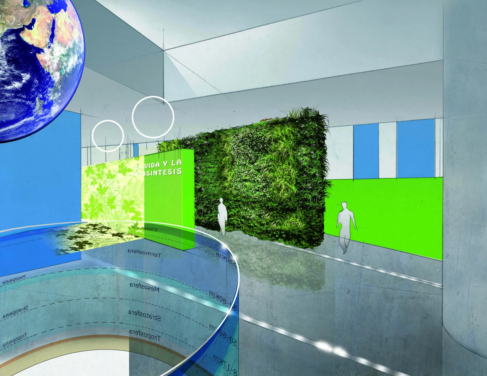

Cultura y museografía
Museo Nacional de la Energía · Área B
Gobierno de España / CIUDEN · Ponferrada
Responsabilidad. Dirección de empresa
Proyecto ejecutivo · imágenes de proyecto

01
Contexto
El diseño museográfico del área dedicada a la energía en la naturaleza.
02
Necesidad
Construir un relato desde el origen de la energía hasta su presencia en el mundo actual.
03
Estrategia
Se desarrollaron guiones, diseño espacial, recursos multimedia y el planteamiento técnico, en coordinación con CIUDEN y asesores científicos.
04
Impacto
El proyecto ejecutivo definió el relato, los espacios y los recursos museográficos del área. La construcción quedó paralizada; las imágenes muestran renders del proyecto.

Créditos y alcance
Gobierno de España / CIUDEN. Proyecto ejecutivo: Optimus Medina Relay. Asesoría científica : Marc Boada y José Manuel Sánchez Ron.
¿Qué tienes entre manos?
Podemos empezar por una necesidad concreta o por una idea que aún necesita forma.